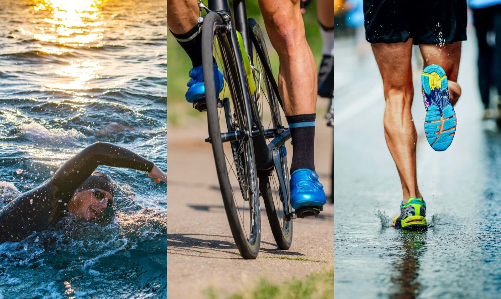
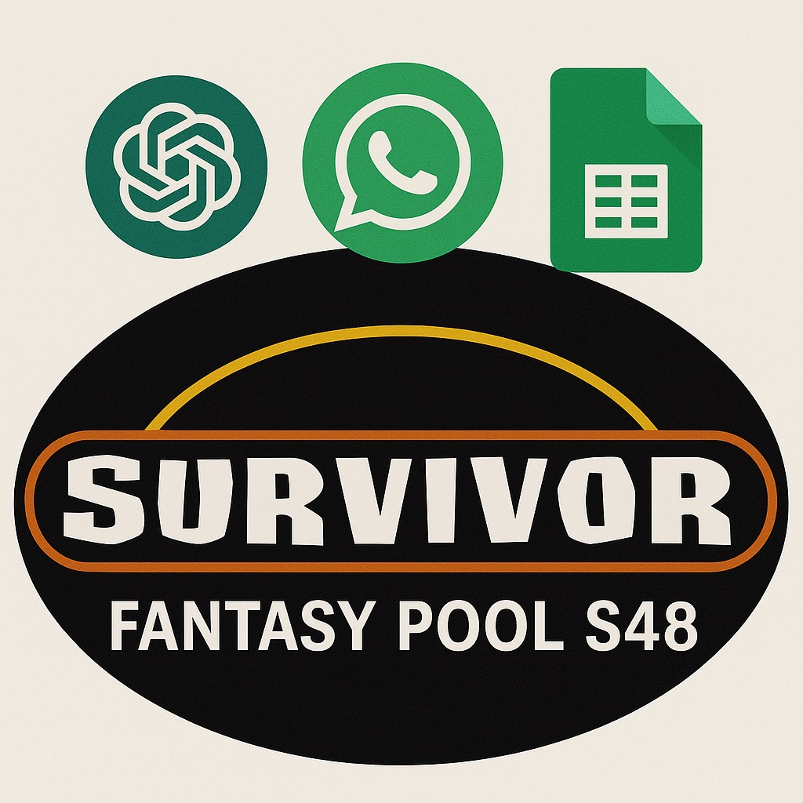
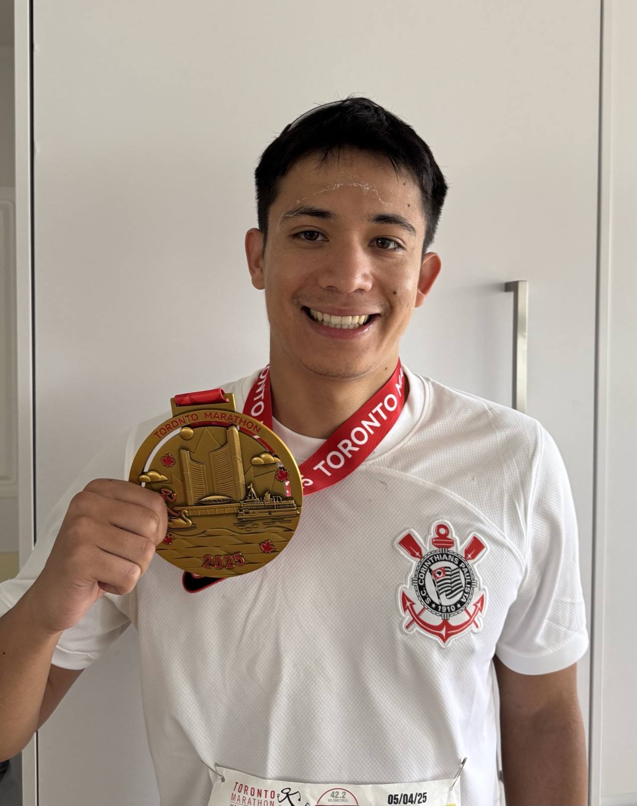
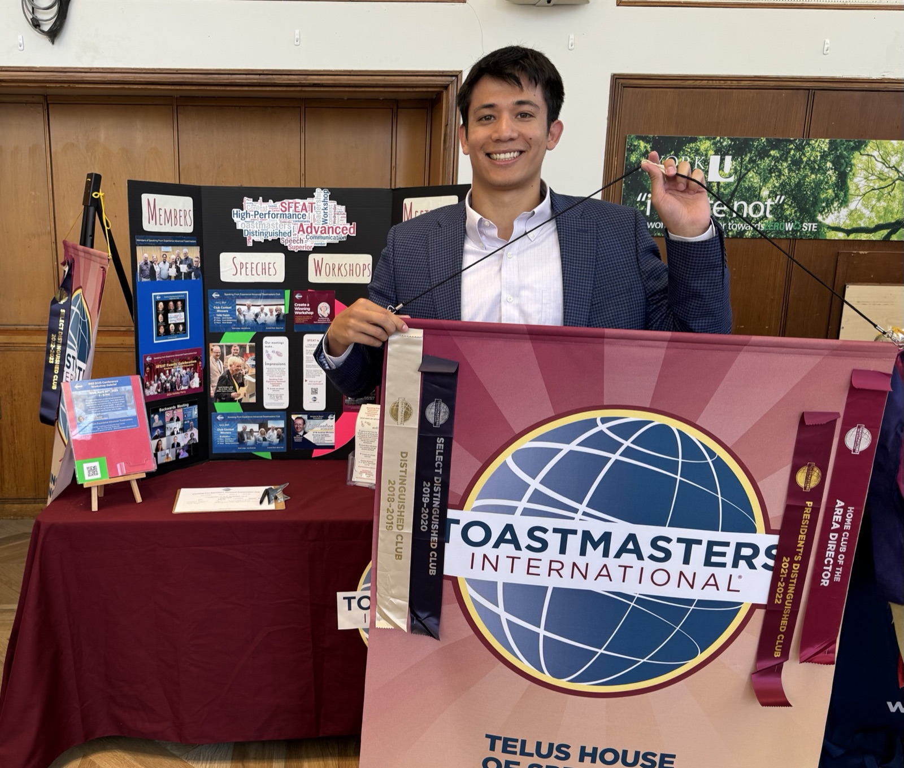

Becoming an Ironman
Nearly 13 hours after jumping into the Ottawa river, I crossed the finish line as an Ironman. It didn't go to plan — here's what blew up and what I learned.
Blog
Thoughts, experiences, and insights on racing, public speaking, Survivor, and work.
Nearly 13 hours after jumping into the Ottawa river, I crossed the finish line as an Ironman. It didn't go to plan — here's what blew up and what I learned.
I have one more race for 2025 — Toronto Hyrox. I hope to finish strong and in the 90th percentile for my age group.
In a previous blog post I talked about signing up to do a triathlon. The day had come and I finally had a chance to experience it.
My girlfriend and I have been living in Leaside for almost 18 months. Since then, we've grown to appreciate the residents in our building and why they are special to us.
I tried blogging before in 2017 to document my solo trip to the UK. After a few years, I decided to pick up blogging again for multiple reasons I'll dwelve into.

After completing my first marathon earlier this year, I've decided to take on an even bigger challenge: an Olympic-distance triathlon. This decision represents a significant step up in my athletic journey, combining three disciplines I've been passionate about individually.
Meal prepping is my secret weapon for saving time, eating healthier, and reducing stress during the week. Here's how I plan, shop, and cook in advance to make my week smoother and more delicious.

I decided to commission a Survivor Fantasy pool, and I turned to AI to support this time consuming endeavour. Running a fantasy pool for Survivor can be incredibly fun, but it also comes with its fair share of administrative challenges.

Running a marathon had always been a distant dream, something I admired from afar but never thought I could achieve. That all changed when I decided to take on the challenge of training for and completing my first marathon.

This past weekend marked a significant milestone in my public speaking journey as I attended my first Toastmasters District Conference. The experience was nothing short of transformative, and I'm excited to share the insights and lessons I gained from this incredible event.
As someone who loves solving problems and driving efficiency, I'm always looking for ways to improve my workflow. Recently, I discovered Cursor AI, an intelligent code editor that promised to revolutionize how I work with code.
As a product manager at Bell Canada, I facilitated the development of the Insights app from a mock view to a functioning beta product — reducing coaching research time by 90%.
As the 2017–2018 ICSS Grad Rep, I oversaw a $15K budget to deliver four graduating class events — including a gala, bowling night, Niagara trip, and custom grad rings — with record turnout.
Appointed to captain a brand-new frosh event for Innis College on a $500 budget, I assembled a team, built a bed on wheels, and raced on King's College Road — inspiring an entire college along the way.
Try a different search or tag.